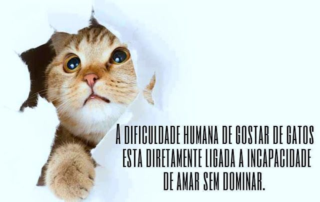
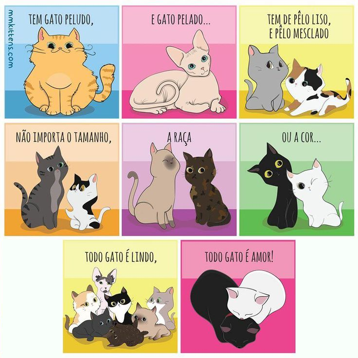

Salve Patinhas
Fundada em 2022, a Salve Patinhas é uma ONG (Organização Não Governamental) que tem como objetivo sensibilizar a sociedade sobre a guarda animal responsável, colaborar com o controle populacional dos gatos de rua e encontrar lares responsáveis para o maior número possível deles.

A Salve Patinhas já atendeu mais de 1000 gatos em situação de abandono e busca por meio de ações efetivas, como castração solidária, palestras, resgates e adoção, contribuir para a construção de um mundo melhor.
